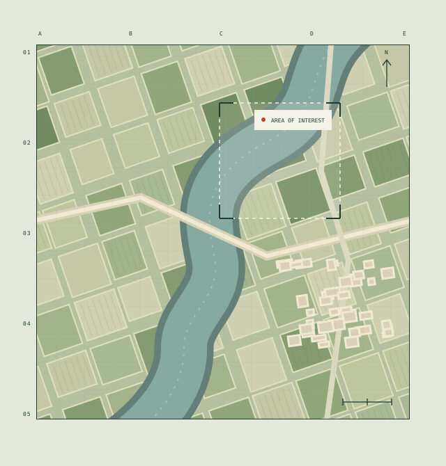

Reading the earth,
one image at a time.
Scalable Land Cover Classification using MobileNetV2
A satellite image classification system that connects model training to an upload-and-predict web application.

Turn satellite imagery into land-cover predictions across four categories, then make the trained models accessible through a web interface.
Our four-person team developed the preprocessing, augmentation, training, and evaluation pipeline. The project compares MobileNetV2 transfer learning with a custom CNN and integrates the models into a Flask application.
846 test images · 4 land-cover categories
Results reported in my resume for this project’s test set.
Start with the images.
Preprocess satellite images and apply data augmentation before model training. The project classifies imagery into four land-cover categories.
DATA PREPROCESSING / AUGMENTATIONCompare two approaches.
Use MobileNetV2 for transfer learning and build a custom convolutional neural network from scratch. Train the models with the Adam optimizer.
TRANSFER LEARNING / CUSTOM CNNLook beyond a single score.
Evaluate accuracy, precision, recall, F1-score, and confusion matrices. The resume reports 99% and 98% accuracy on a test set of 846 images.
MODEL COMPARISON / TEST-SET EVALUATIONPut the model behind an interface.
Integrate the trained models into a Flask web application. A user uploads a satellite image and receives a land-cover prediction.
FLASK / IMAGE UPLOAD / PREDICTION